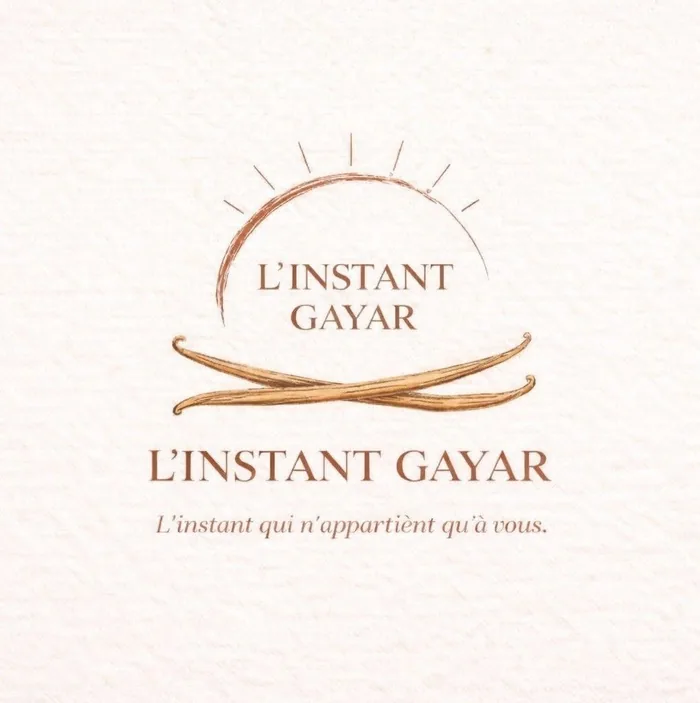
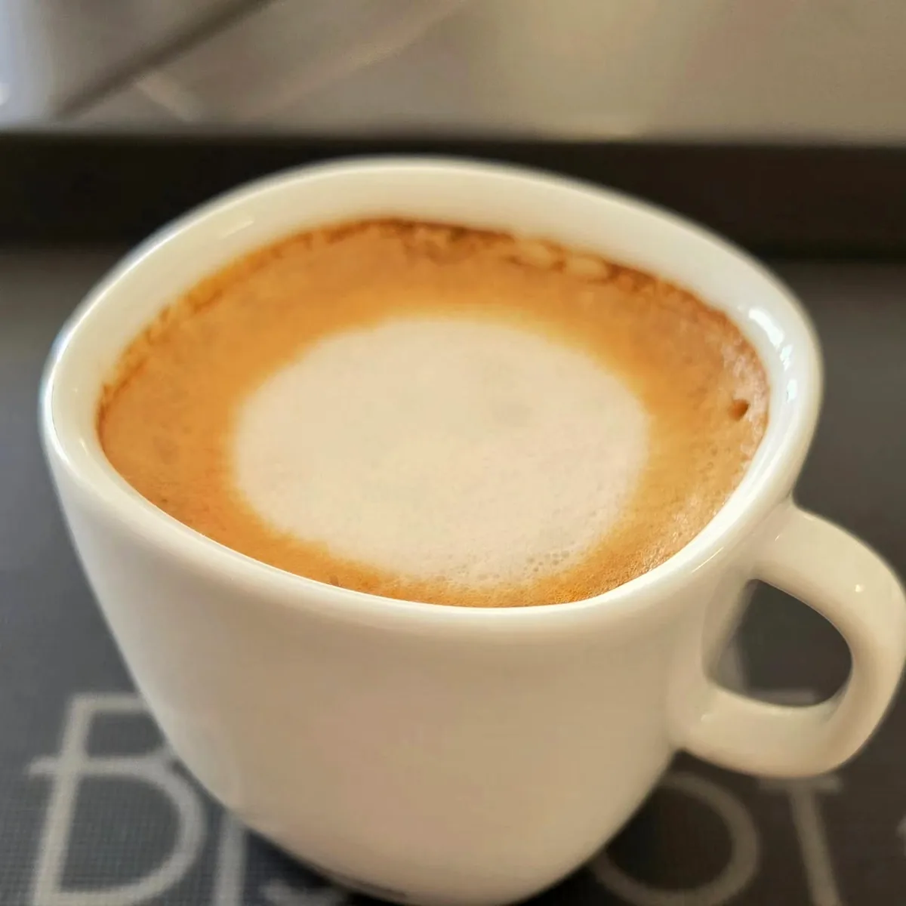
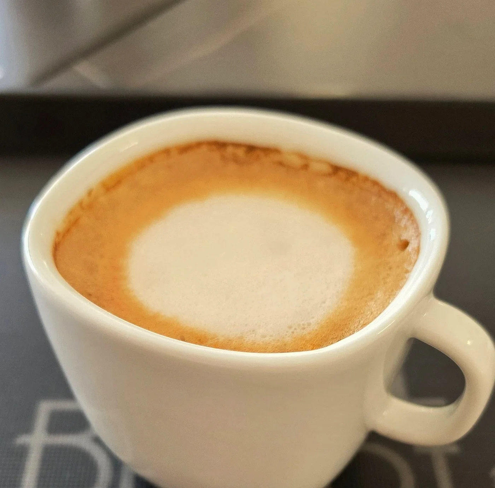
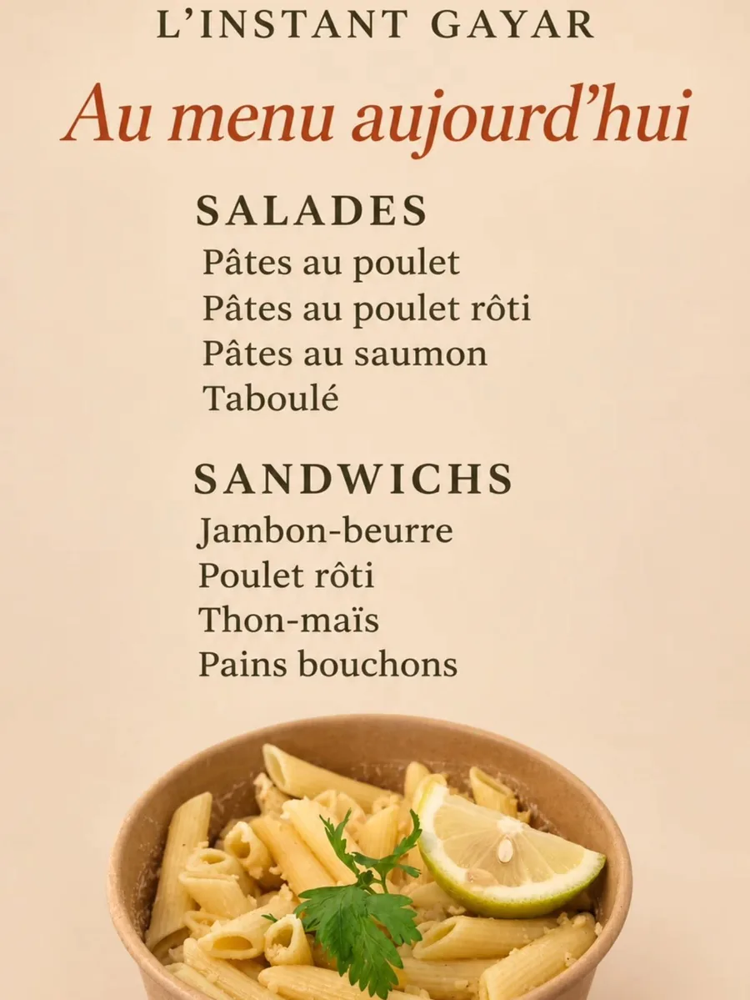

« L'instant qui n'appartient qu'à vous. »
Au 55 boulevard de la Trinité, L'Instant Gayar réunit une pâtisserie artisanale, un coffee house et une boulangerie. Une maison à taille humaine, tenue par une pâtissière diplômée, où l'on vient sur place ou à emporter.
Pâtisserie entre grands classiques et création, viennoiserie, gâteaux de voyage et confitures artisanales, restauration légère le midi et brunch le samedi.

Leur logo, publié sur leur page FacebookArtisanale, entre grands classiques et création.
Un coffee house pour un ti café, sur place ou à emporter.
Pour bien commencer la journée, dès 6 h en semaine.
Le pain du quotidien, au cœur de Montgaillard.
Salades, sandwichs et pains bouchons le midi.
Le samedi, pour prendre tout son temps.
« Salades, sandwichs et pains bouchons vous attendent aujourd'hui, sur place ou à emporter. »
Menu du jour publié le mercredi 4 novembre 2026 ; la carte évolue au fil des jours.
« Avec qui zot vien prendre un ti café ? »L'Instant Gayar, sur sa page Facebook — 31 octobre 2026
Les photos et visuels publiés par L'Instant Gayar sur sa page.



Faites glisser pour voir la suite →
Sur place · À emporter. Horaires publiés le 31 octobre 2026.
Pour les tables de fêtes ou un cadeau gourmand, offrez un moment chez L'Instant Gayar. Écrivez-leur pour parler de votre commande des fêtes.
Les créations et modalités des fêtes sont à voir directement avec la maison.